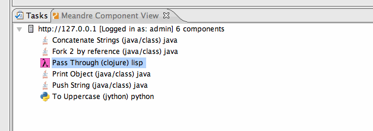

Component Types
Component Types
Three types of Meandre Components are supported in the plugin.
- Java Components (Default) and development supported in eclipse.
- Lisp Components
- Python Components
The Lisp and Python components have the lisp and python script embedded in the descriptor, use the download descriptor
menu item to save it as a file.
